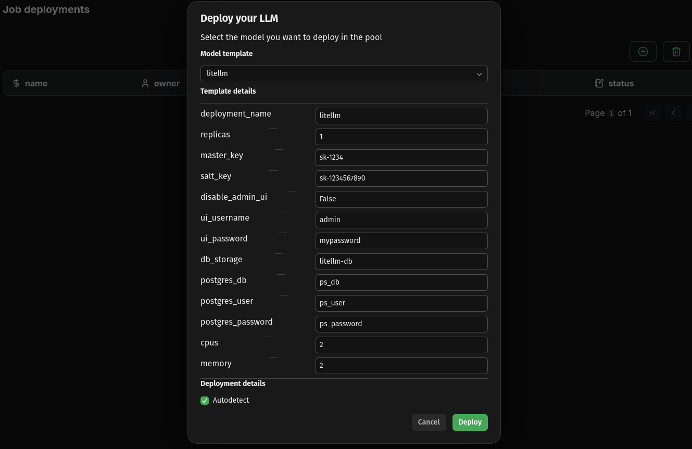
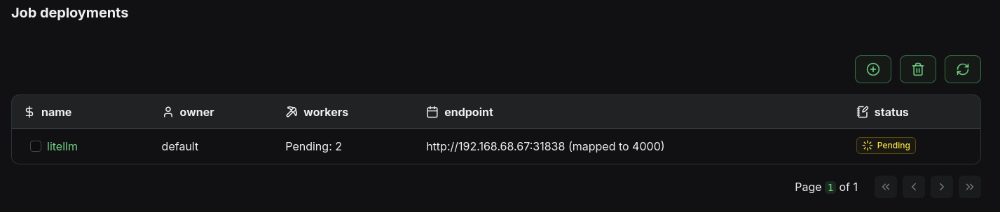
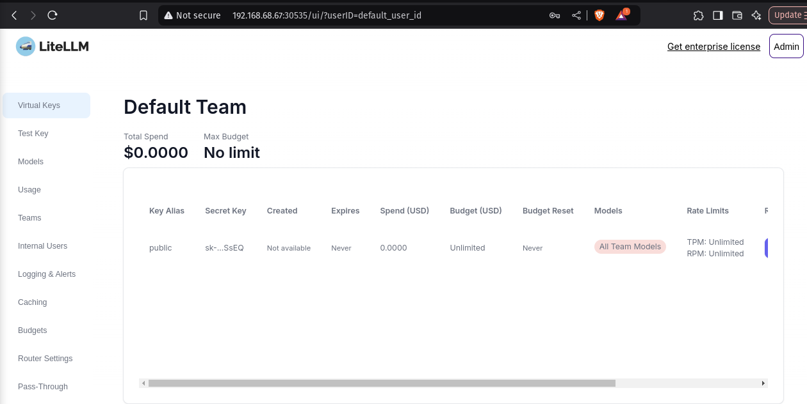

Self-hosted LLM pools
⭐⭐⭐ Kalavai and our LLM pools are open source and free to use in both commercial and non-commercial purposes. If you find it useful, consider supporting us by giving a star to our GitHub project, joining our discord channel and follow our Substack.
Ideal for AI teams that want to supercharge their resources without opening it to the public.
This guide will show you how to start a self-hosted LLM pool with your own hardware, configure it with a single API and UI Playground for all your models and deploy and access a Llama 3.1 8B instance.
What you'll achieve
- Configure unified LLM interface
- Deploy a llamacpp model
- Access model via code and UI
1. Pre-requisites
- Install kalavai CLI on each machine
- Set up a 2 machine LLM pool, i.e. a seed node and one worker
Note: the following commands can be executed on any machine that is part of the pool, provided you have used admin or user access modes to generate the token. If you have used worker, deployments are only allowed in the seed node.
2. Configure unified LLM interface
This is an optional but highly recommended step that will help automatically register any model deployment centrally, so you can interact with any model through a single OpenAI-like API endpoint, or if you prefer UI testing, a single ChatGPT-like UI playground.
We'll use our own template jobs for the task, so no code is required. Both jobs will require a permanent storage, which can be created easily in an LLM pool using kalavai storage create <db name> <size in GB>. Using the kalavai client, create two storage spaces:
$ kalavai storage create litellm-db 1
Storage litellm-db (1Gi) created
$ kalavai storage create webui-db 2
Storage webui-db (2Gi) created
Unified OpenAI-like API
Model templates deployed in LLM pools have an optional key parameter to register themselves with a LiteLLM instance. LiteLLM is a powerful API that unifies all of your models into a single API, making developing apps with LLMs easier and more flexible.
Our LiteLLM template automates the deployment of the API across a pool, database included. To deploy it using the Kalavai GUI, navigate to Jobs, then click on the circle-plus button, in which you can select a litellm template. Set the values of db_storage to litellm-db (or the one you used above).

Once the deployment is complete, you can check the LiteLLM endpoint by navigating to Jobs and seeing the corresponding endpoint for the litellm job.

You will need a virtual key to register models with LiteLLM. For testing you can use the master key defined in your values.yaml under master_key, but it is recommended to generate a virtual one that does not have privilege access. The easiest way of doing so is via the admin UI, under http://192.168.68.67:30535/ui (see more details here).
Example virtual key: sk-rDCm0Vd5hDOigaNbQSSsEQ

Unified UI Playground
OpenWebUI is a great ChatGPT-like app that helps testing LLMs. Our WebUI template manages the deployment of an OpenWebUI instance in your LLM pool, and links it to your LiteLLM instance, so any models deployed and registered with LiteLLM automatically appear in the playground.
To deploy, navigate back to Jobs and click the circle-plus button, this time selecting the playground template. Set the litellm_key to match your virtual key, and data_storage to webui-db (or the one created above).
Once it's ready, you can access the UI via its advertised endpoint (under Jobs), directly on your browser. The first time you login you'll be able to create an admin user. Check the official documentation for more details on the app.

Check deployment progress
Jobs may take a while to deploy. Check the progress in the Jobs page, or using the CLI:
$ kalavai job list
┏━━━━━━━━━┳━━━━━━━━━━━━┳━━━━━━━━━━━━┳━━━━━━━━━━━━━━━━━━━━━━━━━━━━━━━━━━━━━━━━━━━━━┓
┃ Owner ┃ Deployment ┃ Workers ┃ Endpoint ┃
┡━━━━━━━━━╇━━━━━━━━━━━━╇━━━━━━━━━━━━╇━━━━━━━━━━━━━━━━━━━━━━━━━━━━━━━━━━━━━━━━━━━━━┩
│ default │ litellm │ Ready: 2 │ http://192.168.68.67:30535 (mapped to 4000) │
├─────────┼────────────┼────────────┼─────────────────────────────────────────────┤
│ default │ webui-1 │ Pending: 1 │ http://192.168.68.67:31141 (mapped to 8080) │
└─────────┴────────────┴────────────┴─────────────────────────────────────────────┘
In this case, litellm has been deployed but webui-1 is still pending schedule. If a job cannot be scheduled due to lack of resources, consider adding more nodes or reducing the requested resources via the values.yaml files.
3. Deploy models with compatible frameworks
Your self-hosted LLM pool is private and only those you give a joining token access to can see and use it.
In this section, we'll look into how to deploy a model with another of our supported model engines: llama.cpp
We provide an example of template values to deploy Llama 3.1 8B model. Copy its content in your machine into a values.yaml file. Feel free to modify its values. If you use the default values, the deployment will use the following parameters:
litellm_key: set it to your virtual key to automatically register it with both LiteLLM and OpenWebUI instances.cpu_workers: the workload will be split across this many workers. Note that a worker is not necessarily a single node, but a set ofcpusandmemoryRAM (if a node has enough memory and cpus, it will accommodate multiple workers).repo_id: huggingface model id to deploymodel_filename: for gguf models, often repositories have multiple quantized versions. This parameter indicates the name of the file / version you wish to deploy.
When you are ready, deploy:
$ kalavai job run llamacpp --values values.yaml
Template /home/carlosfm/.cache/kalavai/templates/llamacpp/template.yaml successfully deployed!
Service deployed
Once it has been scheduled, check the progress with:
kalavai job logs meta-llama-3-1-8b-instruct-q4-k-m-gguf
Pod meta-llama-3-1-8b-instruct-q4-k-m-gguf-cpu-0 cli.py:1640
-- The C compiler identification is GNU 12.2.0 cli.py:1641
-- The CXX compiler identification is GNU 12.2.0
-- Detecting C compiler ABI info
-- Detecting C compiler ABI info - done
-- Check for working C compiler: /usr/bin/cc - skipped
...
Pod meta-llama-3-1-8b-instruct-q4-k-m-gguf-cpu-1 cli.py:1640
-- The C compiler identification is GNU 12.2.0 cli.py:1641
-- The CXX compiler identification is GNU 12.2.0
-- Detecting C compiler ABI info
-- Detecting C compiler ABI info - done
-- Check for working C compiler: /usr/bin/cc - skipped
...
Pod meta-llama-3-1-8b-instruct-q4-k-m-gguf-cpu-2 cli.py:1640
-- The C compiler identification is GNU 12.2.0 cli.py:1641
-- The CXX compiler identification is GNU 12.2.0
-- Detecting C compiler ABI info
-- Detecting C compiler ABI info - done
-- Check for working C compiler: /usr/bin/cc - skipped
...
Pod meta-llama-3-1-8b-instruct-q4-k-m-gguf-registrar-0 cli.py:1640
Waiting for model service... cli.py:1641
Waiting for
meta-llama-3-1-8b-instruct-q4-k-m-gguf-server-0.meta-llama-3-1-8b-instruct-q4-k-
m-gguf:8080...
...Not ready, backoff
...Not ready, backoff
Pod meta-llama-3-1-8b-instruct-q4-k-m-gguf-server-0 cli.py:1640
Collecting llama-cpp-python==0.3.2 cli.py:1641
Downloading llama_cpp_python-0.3.2.tar.gz (65.0 MB)
━━━━━━━━━━━━━━━━━━━━━━━━━━━━━━━━━━━━━━━━ 65.0/65.0 MB 24.0 MB/s eta 0:00:00
Installing build dependencies: started
...
The logs include individual logs for each worker.
4. Access your models
Once they are donwloaded and loaded into memory, your models will be readily available both via the LiteLLM API as well as through the UI Playground.
UI Playground
The pool comes with an OpenWebUI deployment (playground job) to make it easy to test model inference with LLMs via the browser. Within the UI you can select the model you wish to test and have a chat.
Note: the playground is a shared instance to help users test models without code and should not be used in production. You need to create a playground account to access it. This can be different to your Kalavai account details. The creation of a new user is necessary to keep things like user chat history and preferences.
Single API endpoint
All interactions to models in the pool are brokered by a LiteLLM endpoint that is installed in the system. To interact with it you need a LITELLM_URL and a LITELLM_KEY.
The LITELLM_URL is the endpoint displayed in the Jobs page for the litellm job.
The LITELLM_KEY is shown on the My LLM Pools page of our platform. It is also displayed in the description of the pool when you join it.

In this example:
LITELLM_URL=http://192.168.68.67:30535LITELLM_KEY=sk-qoQC5lijoaBwXoyi_YP1xA
Check available LLMs
Using cURL:
curl -X GET "<LITELLM_URL>/v1/models" \
-H 'Authorization: Bearer <LITELLM_KEY>' \
-H "accept: application/json" \
-H "Content-Type: application/json"
Using python:
import requests
LITELLM_URL = "http://192.168.68.67:30535"
LITELLM_KEY = "sk-qoQC5lijoaBwXoyi_YP1xA"
def list_models():
response = requests.get(
f"{LITELLM_URL}/v1/models",
headers={"Authorization": f"Bearer {LITELLM_KEY}"}
)
return response.json()
if __name__ == "__main__":
print(
list_models()
)
Use models
Using cURL:
curl --location '<LITELLM_URL>/chat/completions' \
--header 'Authorization: Bearer <LITELLM_KEY>' \
--header 'Content-Type: application/json' \
--data '{
"model": "<MODEL_NAME>",
"messages": [
{
"role": "user",
"content": "what llm are you"
}
]
}'
Using python:
import requests
LITELLM_URL = "http://192.168.68.67:30535"
LITELLM_KEY = "sk-qoQC5lijoaBwXoyi_YP1xA"
def model_inference():
response = requests.post(
f"{LITELLM_URL}/chat/completions",
headers={"Authorization": f"Bearer {LITELLM_KEY}"},
json={
"model": "<MODEL_NAME>",
"messages": [
{
"role": "user",
"content": "what llm are you"
}]
}
)
return response.json()
if __name__ == "__main__":
print(
model_inference()
)
For more details on the endpoint(s) parameters, check out LiteLLM documentation and the Swagger API
5. Clean up
Remove models:
kalavai job delete <name of the model>
You can identify the name of the model by listing them with:
$ kalavai job list
┏━━━━━━━━━┳━━━━━━━━━━━━━━━━━━━━━━━━━━━━━━━━━━━━━━┳━━━━━━━━━━━━┳━━━━━━━━━━━━━━━━━━━━━━━━━━━━━━━━━━━━━━━┓
┃ Owner ┃ Deployment ┃ Workers ┃ Endpoint ┃
┡━━━━━━━━━╇━━━━━━━━━━━━━━━━━━━━━━━━━━━━━━━━━━━━━━╇━━━━━━━━━━━━╇━━━━━━━━━━━━━━━━━━━━━━━━━━━━━━━━━━━━━━━┩
│ default │ litellm │ Ready: 2 │ http://192.168.68.67:30535 (mapped to │
│ │ │ │ 4000) │
├─────────┼──────────────────────────────────────┼────────────┼───────────────────────────────────────┤
│ default │ meta-llama-3-1-8b-instruct-q4-k-m-gg │ Pending: 5 │ http://192.168.68.67:31645 (mapped to │
│ │ uf │ │ 8080) │
├─────────┼──────────────────────────────────────┼────────────┼───────────────────────────────────────┤
│ default │ webui-1 │ Ready: 1 │ http://192.168.68.67:31141 (mapped to │
│ │ │ │ 8080) │
└─────────┴──────────────────────────────────────┴────────────┴───────────────────────────────────────┘
Disconnect a worker node and remove the pool:
# from a worker node
kalavai pool stop
# from the seed node
kalavai pool stop
6. What's next?
Enjoy your new supercomputer, check out our templates and examples for more model engines and keep us posted on what you achieve!